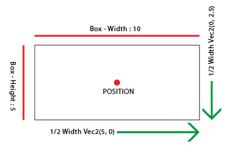
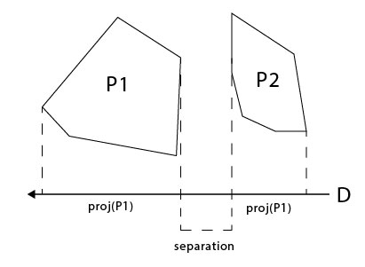

A phrase I've been hearing used a lot lately, "Web Workers". What is a web worker? What can I do with one? Through this tutorial I will have you follow along with me while I go through some steps to understanding what a Web Worker is and how we can use these in actual situations. Prior to this I have no knowledge whatsoever as to what they are used for and what they are capable of, but hopefully by the end of this I will!
First let's get our basic template for our page setup, you can download the template HERE, or you can set up whatever basic index page is most comfortable to work in.
What does developer.mozilla.org say about Web Workers?
Ok, so this sounds really promising! What I am getting out of this is that Web Workers can simulate multithreading and could also serve as a pseudo response server for more dynamic content.
Also the thought of nesting certain calculation functions inside another script could allow more dynamic animations on a canvas element, or any other intensive calculation. A few points about scope, if we create a web worker thread it creates a new thread outside of the scope of the window. If at any time we would need to refer to the 'window' that called the worker thread we would instead of using window use self. *dont quote me on this part
Other Key Points:
I would recommend reading the mozilla page, as most of this tutorial will be based off the information served there.
Now that we have an idea of what one is, let's go ahead and jump right to the main.js file and start making some changes.
window.onload = function() { if (window.Worker) { document.body.innerHTML = "We Have Ignition"; }else{ document.body.innerHTML = "Lame sauce... no Web Workers..."; } }
If you have ignition, then you are good to go! If not then, yeah something is wrong because pretty sure most modern browsers have these... geez guy/gal.
From this point we need to actually do something with a web worker so the first step in that will be to go to our js folder and create a new script called "worker1.js" and then edit both the main script and the worker script accordingly.
window.onload = function() { if (window.Worker) { var newWorker = new Worker("./js/worker1.js"); newWorker.postMessage([1,"Two"]); console.log('Message posted...'); newWorker.onmessage = function(e) { result = e.data; console.log(result); } }else{ document.body.innerHTML = "Lame sauce... no Web Workers..."; } }
onmessage = function(e) { console.log('Message received from main script'); var workerResult = 'Result: ' + (e.data[0] + e.data[1]); console.log('Posting message back to main script'); postMessage(workerResult); }
What is happening here is first we are creating our instance of the worker on our main script. Then we are using the built in method .postMessage which will be the main basis for communicating with out worker. Then we have the worker listen for a message by defining the onmessage function, do whatever we want with the data and then pass it back! If everything is set up right when you refresh the page nothing amazing happens, but when you look in the console you will see the desired output hopefully. If you are having trouble or just feel like skipping this step you can download it HERE
Now that we have this set up, what is something we could make? Hmmmm, I know how about Pong. We will get to learn how to use the Web Worker to do all the calculations and just have the main page update the canvas. If we do things right we could perhaps have one worker for calculating what is happening and the other calculating the output to the canvas. This may not be ideal or even the correct thing to do, but this is open research so I have no shame.
Because we don't have another person and I don't feel like going over AI for this tutorial, lets make a game that we can play with ourselves (ha). So to get things rolling let's make these changes to our index.html, main.js and main.css.
<!DOCTYPE html PUBLIC "-//W3C//DTD XHTML 1.0 Transitional//EN" "http://www.w3.org/TR/xhtml1/DTD/xhtml1-transitional.dtd"> <html xmlns="http://www.w3.org/1999/xhtml"> <head> <meta http-equiv="Content-Type" content="text/html; charset=utf-8" /> <title>Web Workers Step 2</title> <link href="./css/main.css" rel="stylesheet" type="text/css" /> <script type="text/javascript" src="./js/main.js"></script> </head> <body> <canvas id='cvas'></canvas> <div id='score'></div> </body> </html>
@charset "utf-8"; /* Web Workers Tutorial */ html, body{ padding:0; margin:0; min-height:100%; height:100%; } #score{ position:absolute; top:1em; left:1em; font-family:"Lucida Console", Monaco, monospace; font-size:18px; font-variant:small-caps; opacity:0.5; }
window.onload = function() { cvas = document.getElementById('cvas'); //Lets make it Global ^_^ var context = cvas.getContext('2d'); var score = document.getElementById('score'); score.innerHTML = "Score: 0"; function resize(){ cvas.setAttribute("width", window.innerWidth+'px'); cvas.setAttribute("height", window.innerHeight+'px'); drawBall(); drawPlayer(); return } resize(); window.onresize = resize; //Lets just Draw our ball for now and paddles for now. function drawBall(){ var centerX = cvas.width / 2; var centerY = cvas.height / 2; var radius = cvas.height / 40; context.beginPath(); context.arc(centerX, centerY, radius, 0, 2 * Math.PI, false); context.fillStyle = 'blue'; context.fill(); context.lineWidth = 1; context.strokeStyle = 'blue'; context.stroke(); } function drawPlayer(){ var centerX = cvas.width / 2; var centerY = cvas.height - 20; var width = cvas.width / 10; var height = 10; context.fillStyle = 'red'; context.fillRect(centerX - (width*0.5) ,centerY,width,height); } if (window.Worker) { var newWorker = new Worker("./js/worker1.js"); newWorker.postMessage([1,"Two"]); console.log('Message posted...'); newWorker.onmessage = function(e) { result = e.data; console.log(result); } }else{ document.body.innerHTML = "Lame sauce... no Web Workers..."; } }
If you're all set up things should look like this.
Ok, so basically all we did was set up a resize listener, and some basic function to figure out how we are going to draw the objects
Now that we got some basic things set up its time to get to core structure of our program. You can download step 2 if you feel like skipping to this point or are having trouble.
So the first thing on the chopping block, is let's get a ASYNC loop set up with a throttle on it so we're not just calculating for no reason on the draws. Then move the functions for drawing on the canvas onto the worker and see if it all still works. I'm not sure if this can all happen on the worker, but I have a sneaking suspicion that it will work just fine as long as we make sure we set up the correct scopes.
That means we will be editing the worker1.js file.
newGame = null; onmessage = function(e) { console.log('Message received from main script'); var type = null; if(e.data.length){ type = e.data[0]; } switch(type){ case "init" : newGame = new pong(e.data[1]); break; console.log('new Game'); } } pong = function(cvas){ this.score = 0; this.run = false; this._cvas = cvas; };
if (window.Worker) { var newWorker = new Worker("./js/worker1.js"); newWorker.postMessage(['init', cvas]); newWorker.onmessage = function(e) { result = e.data; console.log(result); } }else{ document.body.innerHTML = "Lame sauce... no Web Workers..."; }
If we try to run this we get that the error: "DataCloneError: The object could not be cloned." I believe this is because of instead of passing a reference of the object to the worker script it tried to make a clone of it, which is evidently not permitted with a canvas element (we could pass the imageData as a Buffer or Array though, but kinda overkill in this situation). So our work arounds will be to try to pass the context of the canvas, or just have the main script do the canvas manipulations but have the worker thread do the calculations. I'm not sure if this is even a correct use for a Web Worker but we will find out.
So I guess we should actually set up the structure for the game on the main thread, so on the main.js we add all the constants and containers for the game. As of right now we will do a simple 30Hz interval loop to process what needs to be put onto the canvas. Later we will make this loop more customizable and put in a way to set our FPS. The concept that we will be testing is having the physics be calculated on the worker, and have it push the updated hits and other properties to the main thread to be processed. Initially here we will set the main and worker thread to work at the same frequency, but later will prolly crank up the main thread to 60Hz and see how that affects performance.
SCALE = 1; CENTERX = 0; CENTERY = 0; Entity = function(id, pos){ //pos is an array(3) with [x,y,angle]; this.id = id; this.pos = pos; this.velocity = [0,0,0]; // X,Y,ROTATION } Entity.prototype.update = function(state) { this.pos = state.pos; } Entity.prototype.draw = function(ctx) { ctx.fillStyle = 'black'; ctx.beginPath(); ctx.arc(this.pos[0]+CENTERX , this.pos[1]+CENTERY , 2, 0, Math.PI * 2, true); ctx.closePath(); ctx.fill(); } Ball = function(id, pos) { Entity.call(this, id, pos); this.body = { type:'circle', radius : SCALE, } } Ball.prototype = new Entity(); Ball.prototype.constructor = Ball; Ball.prototype.draw = function(ctx) { ctx.fillStyle = 'blue'; ctx.beginPath(); ctx.arc(this.pos[0]+CENTERX, this.pos[1]+CENTERY, SCALE, 0, Math.PI * 2, true); ctx.closePath(); ctx.fill(); Entity.prototype.draw.call(this, ctx); } player = function(id, pos) { this.body = { type:'box', points : [ [-(10 * SCALE)*0.5, -SCALE*0.5], //TL [(10 * SCALE)*0.5, -SCALE*0.5], //TR [-(10 * SCALE)*0.5, SCALE*0.5], //BL [(10 * SCALE)*0.5, SCALE*0.5] //BR ] } Entity.call(this, id, pos); } player.prototype = new Entity(); player.prototype.constructor = player; player.prototype.draw = function(ctx) { ctx.fillStyle = 'red'; ctx.fillRect((this.pos[0]+CENTERX)-((10 * SCALE)*0.5), (window.innerHeight -20), (10 * SCALE), 1 * SCALE); } pong = { ent_stack : [], gravity : [0,0.2], _init : null } window.onload = function() { cvas = document.getElementById('cvas'); //Lets make it Global ^_^ var ctx = cvas.getContext('2d'); var score = document.getElementById('score'); score.innerHTML = "Score: 0"; pong.ent_stack.push(new Ball('b1', [0,0,0])); pong.ent_stack.push(new player('player1', [0, window.innerHeight - 20 ,0])); function resize(){ cvas.setAttribute("width", window.innerWidth+'px'); cvas.setAttribute("height", window.innerHeight+'px'); SCALE = cvas.height / 40; CENTERX = cvas.width / 2; CENTERY = cvas.height / 2; reDraw(); return } function reDraw(){ for(var i=0; i<pong.ent_stack.length; i++){ pong.ent_stack[i].draw(ctx); } } resize(); window.onresize = resize; if (window.Worker) { console.log("Worker Go!"); var newWorker = new Worker("./js/worker1.js"); newWorker.postMessage(['init']); /*newWorker.onmessage = function(e) { var result = e.data; if(result[0]=='update'){ } }*/ setInterval(function(){ ctx.clearRect(0, 0, cvas.width, cvas.height); reDraw(); },1000/30); }else{ document.body.innerHTML = "Lame sauce... no Web Workers..."; } }
Now the break down on this is as follows. One, we set up some global variables that will hold things that determine our size of our entities being drawn on the canvas. We make them global because at any point the user may resize the document and we want everything to remain the same. Right now we will disinclude the scale into the physics calculations, but later we will have to make sure we apply the scale to the physics as well so that the velocities and gravity etc stay proportionate.
Next we define our basic Entity Object, and its prototypes. This will be the basic container for whatever other objects we want to render on the screen. We give the Entity Object a draw prototype that should give us a center point. If you want to use the center point you must make sure that if your not spawning whatever entity at the center of the canvas, you need to translate the context prior to the output otherwise the dot will not be on the center of the new entity (not important we only using it on the ball which spawns in the center).
Then we define different Constructors for the Entity Object so that we can call different shapes. This is a very basic prototype/constructor layout and should be fairly straightforward to understand. After we have our Constructors ready we need to define a global container for everything. In this global container "pong", we can define some constants as well. Once the DOM has loaded, we create the new entities and push them to a stack on our global container. Modify our all so important resize function, and then create a new function to call the draw method on all active entities. You could at this point put and enabled disabled flag on the Entities to toggle them on or off, but we'll save that for later.
If in your interval loop, we stick the argument pong.ent_stack[0].pos[1]+= 0.25; You will see the ball move, which means we are on the right track.
After some more changes to the main script, we go back to the worker1.js, it is here that we start defining the structure for these workers to do physics calculations and post updates back to the main thread. We might as well take advantage of the number of threads available to us, and future proof a little bit with a navagator function that might not be supported in all browsers so we have a fall back.
// Step 3 engine = null; onmessage = function(e) { var type = null; if(e.data.length){ type = e.data[0]; } switch(type){ case "init" : engine = new physics(e.data); break; } } physics = function(data){ this._core = data[1]; this.gravity = data[2]; this.stack = []; var parent = this; this._init = setInterval(function(){parent._run()},1000/30); } physics.prototype._run = function(){ console.log("Worker on Thread "+this._core+" Fired!"); };
We also need to make some changes on the main.js file to accomidate the thread structure.
... pong = { ent_stack : [], gravity : [0,0.2], _init : null, cores : navigator.hardwareConcurrency || 4, } ... if (window.Worker) { workers = new Array(pong.cores); wID = 0; for(c=0; c<pong.cores; c++){ workers[c] = new Worker("./js/worker1.js"); workers[c].postMessage(['init', c, pong.gravity]); } /*newWorker.onmessage = function(e) { var result = e.data; if(result[0]=='update'){ } }*/ pong._init = setInterval(function(){ ctx.clearRect(0, 0, cvas.width, cvas.height); reDraw(); },1000/30); ....
If when you run the page and look at your console, you should see all the threads sending out information to the console! So now that we have our threads firing, and creating a new function called physics, its time to pass some Entites to the now unbuilt physics engine.
So how are we gonna handle this? Why dont we just use some other library? Why have you not used jQuery yet? Yeah well... the whole point of this is to expand your and my know how and just deploying a library is easy. Plus how much better are you going to be at your favorite engine if you understand some of the basic components?
Right away, we are only dealing with 2 dimensions so the natural inclination would be to go with a Array(2), and prototype some functions into the Array Object, but why not tailor things for what we are doing. So instead lets do an Array(3) with it representing [POSX, POSY, ROTATION], the same concept then can be used for the velocity vector. We would need a few things to happen for the engine to actually work:
Now as I was doing this, I got all the way to having the objects pushed to their thread, then I realized... there would be no way to actually do a hit test on any object because simply enough there is no effective way to communicate between threads. Now there are shared workers but thats a whole other monster we will try to tackle at some other point. So instead of bogging you down with the script that does not work we will move right on to a single sub thread model.
// Step 3 var engine = null; //Does not need to be global. onmessage = function(e) { var type = null; if(e.data.length){ type = e.data[0]; } switch(type){ case "init" : engine = new physics(e.data); break; case "AddObj" : engine._addObject(e.data[1]); break; } } physics = function(data){ console.log("TREAD "+data[1]+" STARTED!"); this._core = data[1]; this.gravity = data[2]; this.stack = []; var parent = this; this._init = setInterval(function(){parent._run()},1000/30); } physics.prototype._run = function(){ for(e=0; e<this.stack.length; e++){ if(!this.stack[e].on){continue} var tempCalc = this._calc(this.stack[e]); /* var hit = false; for(h=e+1; e< this.stack.length; h++){ if(!this.stack[h].on){continue} if(hit){return} if(physics._hitTest(e,h)){ }else{ continue } } */ this._apply(tempCalc, e); } }; physics.prototype._addObject = function(obj){ obj.pos = obj.intPos, obj.velocity = obj.intVel; this.stack.push(obj); console.log("Thread "+this._core+": Added Obj - "+obj.id+" to its stack"); } physics.prototype._hitTest = function(a,b){ return false; } physics.prototype._calc = function(obj){ var response = { stackID : obj.stackID, }; response.newVel = [ obj.velocity[0] + (obj.mass * this.gravity[0]), //X obj.velocity[1] + (obj.mass * this.gravity[1]), //Y obj.velocity[2] // ROTATION ] response.newPos = [ obj.pos[0] + response.newVel[0], //X obj.pos[1] + response.newVel[1], //Y obj.pos[2] //ROTATION ] //console.log(response); return response; } physics.prototype._apply = function(calc, id){ this.stack[id].pos = calc.newPos; this.stack[id].velocity = calc.newVel; postMessage(['apply',calc]); }
With these changes to the worker script, we have enabled the ability to start calculating basic physics into our scene. To enable it we need to modify the main script now. We can get rid of the thread count on the pong object as we are going with a single sub thread now, and then we have to change our script around to be a single worker instead of the 4 we had set up.
... if (window.Worker) { worker = new Worker("./js/worker1.js"); worker.postMessage(['init', 0, pong.gravity]); function addObj(obj, stackID){ worker.postMessage(['AddObj', { id : obj.id, body : obj.body, mass : obj.mass, intVel : obj.velocity, intPos : obj.pos, stackID : stackID, on : true } ]); } for(var i = 0; i < pong.ent_stack.length; i++){ addObj(pong.ent_stack[i], i); } worker.onmessage = function(e) { var result = e.data; if(result[0]=='apply'){ var calc = result[1]; pong.ent_stack[calc.stackID].velocity = calc.newVel; pong.ent_stack[calc.stackID].pos = calc.newPos; } } pong._init = setInterval(function(){ ctx.clearRect(0, 0, cvas.width, cvas.height); reDraw(); },1000/30); ...
If your following along and have everything set up correct, when you refresh the page the ball should now drop like graviity is being applied to it. This set the stage for us to start making some more dynamic effects, the things we have to consider now is how we are going to handle our Collison detetions. The most simple model will be for us to use a projection and impulse system where we test if our object is going to collide find out the position where this is happening and then modify our velocity and position to stop the objects from penitrating. We will keep the model simple, but will include things like restitution and friction.
How does one actually do a collision test? Well in concept it is easy, first you have to establish what kind of collisons you need to calculate for, are they simple shapes like rectangles and cirlces only? Are the axes of the rectangles always the same? What kind of shapes we need to test will decide our approch. For this model we need to track at least circles and off axis rectangles. I want to include off angle rectangles even though the paddle will never change its angle, because there may be a reason to place other objects in the scene that do not have flat axial value. Oh man, I just realized how quickly this is becoming a math lesson... my bad, anyways to achive our goals lets first go over some vocabulary. Also for these examples I am writing them out for any length vector, which is useful in normal situations but with how we are storing our stuff it might not be the best idea. So I have one of two options, pass more variables that are standard vec2's and numbers instead of our vec3 that has rotation with it as well, or redo these functions to only handle 2 units of the vector we hand it. The smartest I think would be to follow convention, and drop the vec3 that we were using and have a seperate value for the rotation so that way when we do our vector calculations they are correct.
function normalize(vec){ var l=0; for(var i = 0; i < vec.length; i++){ l+= (vec[i]*vec[i]); } l = Math.sqrt(l); for(var i = 0; i < vec.length; i++){ vec[i]/=l; } return vec }
function dot(a, b){ var t = 0; for(var i=0; i < vec.length; i++){ t += (a[i]*b[i]); } return t; }
function project(a, b){ var proj = new Array(a.length); var bt = 0; for(var i = 0; i < a.length; i++){ bt+= (b[i]*b[i]); } for(var i = 0; i < a.length; i++){ proj[i] = (dot(a,b)/bt)*b[i]; } return proj }
function perproduct(vec2){ var rN = [-vec2[1], vec2[0]]; var lN = [vec3[1], -vec2[0]]; return dot(vec2,rN); }
With these basic functions we are going to be able to run a whole array of 2d comparisons. So to solve our 2D overlap test using a series of One Dimensonal Tests. Each query tests if the two shapes overlap along a given axis. If one of the Axes we test fails then we know that the objects are not intersecting, and we can stop our test to save on overhead. If we run a test and find that the objects overlap along all of the possible axes, they are definitely overlapping each other. From this point we need to figure out the projection vector, which we will use to seperate the objects.
The last step would be to find which axis has the smallest amount of overlap between the two objects. The "Push" we are looking for or the projection vector is the same as the axis direction with the length of the projection vector equal to the size of the overlap. To acomplish this we need to know first the position of the object and all of its axes, along with our target object and the same. But Wait? What about circles, or triangles or or... ok fine lets do some drawings.

In 2D games to represent moving objects we make an axis-aligned bounding box, or AABB. An AABB is defined by a position and two vectors xw and yw that represent half widths of the object. The concept is the same as testing the radius of circle, but these are aligned to the world axis and are then defined in a specific direction and distance.
Well that all sounds cool... but how does it work? I think maybe the simplest way will be to make a real quick mock up canvas for you. After the first example, we will go over more shapes and the methods for testing them. I know this was supposed to be a webworker tutorial, but for real though we need something decently intensive to even have a nessesity for them. Collision testing I think meets that bill, so please stay with me or skip ahead.
In the next example what we will see happen when you click run, is the red box should move to the right and once it collides with the other box well start it all over.
This is a SUPER simplified model, which works only if the two objects faces are perfectly aligned and thats something that is kinda weak for what we are looking to do. So what happens when its a polygonal shape or a off angle square? Back to the drawing boards.

This is where the method for seaperating axes comes into play. If you look at our diagram on the right you will see two polygons. Both of these shapes are called as Convex Shapes. A Convex shape is any polygon that can be defined by a set of points, that if you were to draw a straight line anywhere on the shape from one point to anouther on the polygon, the line will never travel outside of the shape. Anyways these two Convex polygons are in a non intersecting state.
The value for the seperation is positive and so we know that the shapes are not touching, if it was negitive the shapes would be overlapping and if it was 0 the shapes are just touching. With this kind of hit detection there would be three kinds of possible contact, edge to edge, vertex to edge, and vertex to vertex. If we were to draw a line between the two polygons and we pretend the seperation line continues to infinity and we draw a line perpedicular to this line, that is our speration axis.
Anouther thing we need to start identifying is the "normal" angle of and edge. This is not to be confused with our normalization meathod discussed earlier, but is a way to establish heading of our edge. When we define our shapes, we need to follow a convention that assumes the shapes points are orderd on a clockwise direction, this is so when we loop through our edges it stays consitant on the output no matter the shape. You could proccess the shapes counter-clockwise but this would effectivly reverse your edge normals.
I think the easist way to visualize all this is to make some more diagrams... lets see if I can mock up some canvas elements to demonstrate.
If you look at the diagram on the right, you will see a Convex Polygon with its center point represented by the black dot. The red dots are the points of the polygon, the green are the edges and the blue arrows are the normal vector or perpendicular axis to the face. If you drag one of the polygons you will see that the normal for that face changes.